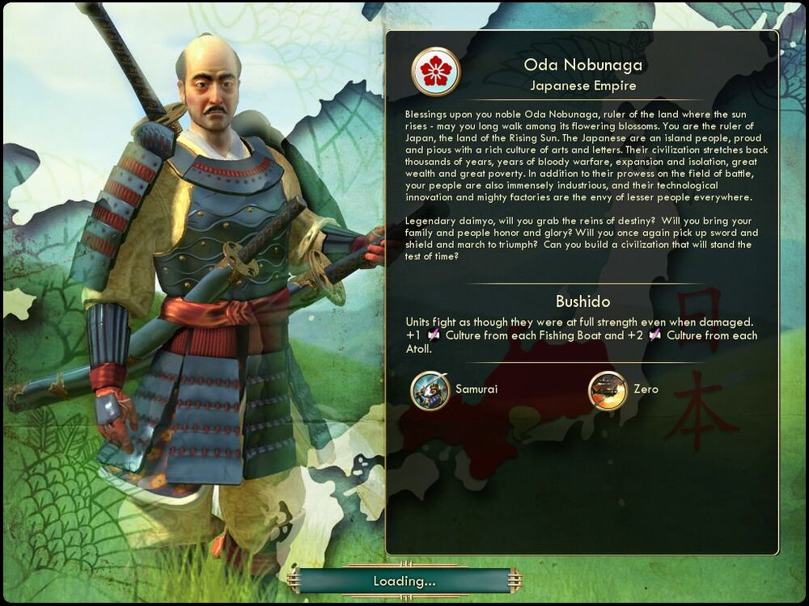

오다 노부나가 Oda Nobunaga일본 Japan |
|  |
| 태양이 떠오르는 나라를 다스리는 고귀한 오다 노부나가여, 그대가 축복 속에서 피어나는 꽃잎 사이를 오래오래 걷기를 기원합니다. 일본인은 풍부한 예술과 학문, 문화를 자랑하는 섬 국민입니다. 일본 문명의 역사는 수천 년을 거슬러 올라가는 피 튀기는 전쟁의 역사, 확장과 고립의 역사, 엄청난 부와 엄청난 빈곤의 역사입니다. 일본인은 전투에 두각을 드러내는 한편으로 매우 성실하기도 하며, 그 기술 혁명과 엄청난 공장은 전 세계 약소국의 부러움을 삽니다.
전설적인 다이묘여, 운명의 고삐를 쥐고 그대의 가문과 국민에게 영광을 안겨주시지 않겠습니까? 다시 한번 검과 방패를 들고 승리를 향해 진군하여, 세월의 시련을 이겨낼 문명을 건설해 주시겠습니까? |
| 속성 | |
|---|---|
| 특성 |
무사도
(Bushido) 유닛이 피해를 받아도 항상 최대 전투력을 유지합니다. 어선에서 생산하는 문화가 1, 산호섬이 생산하는 문화가 2 증가합니다. |
| 고유유닛1 |
사무라이
(Samurai) 장검사를 대체하는 고유 유닛입니다. 충격 1의 승급[2]과 전투 시 위대한 장군의 등장을 가속하는 승급을 가집니다. 승선 시 어선 배치가 가능합니다. |
| 고유유닛2 |
제로센
(Zero) 전투기를 대체하는 고유 유닛입니다. 다른 전투기를 상대할 때 전투력 보너스 33%를 받는 승급을 가집니다. 석유 자원을 소모하지 않습니다 |
| 시작지점 | 해안 |